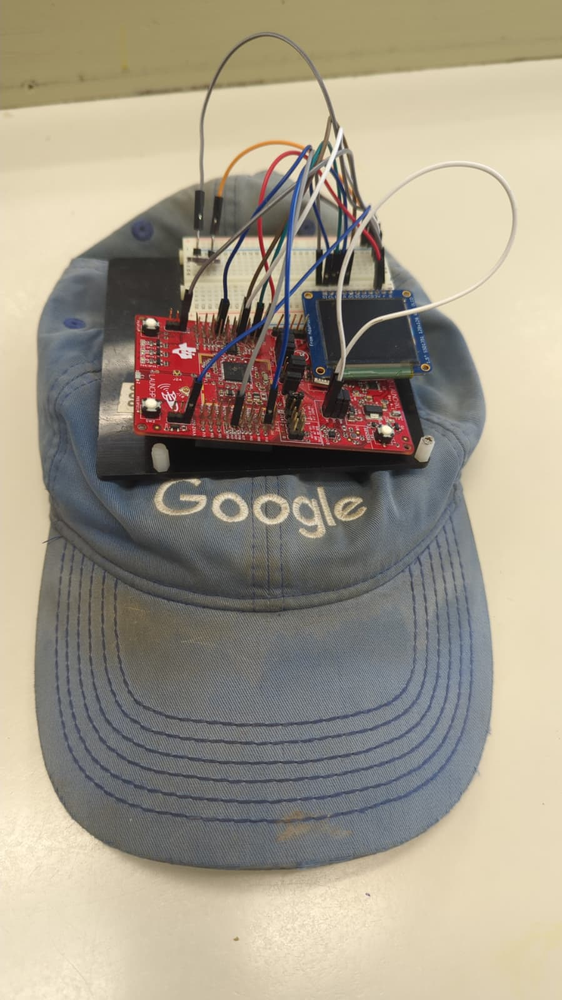

About the Product
Weather Buddy is an embedded systems project designed to help users stay safe, active, and aware of their environment. The device is mounted on a hat and combines fitness tracking, weather monitoring, sun exposure awareness, and navigation support into one system.
It uses the CC3200 wifi chip to connect to online services, gathers local sensor data, and displays useful information to the user in real time.
Key Features
- Step counting using an onboard accelerometer
- Sunlight detection with a photodiode
- Weather tracking and forecasting using Open Meteo
- Email alerts for dangerous UV conditions
- Map display support using AWS and Google Maps API
- Low power operation using interrupts and sleep mode
Project Image

Demo
Watch the project demo here:
Watch Demo